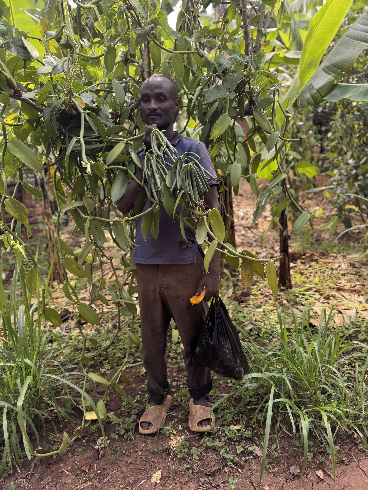

From Student to CEO
"Farm Teens gave me the skills and confidence to start my own goat business. Now I employ youth."
Our comprehensive training programs equip Ugandan youth with the skills, knowledge, and resources needed to become successful agripreneurs in today's smart-climate environment.
Comprehensive pathways designed to drive change and build complete agricultural entrepreneurs
We empower youth and smallholder farmers with practical skills to grow better coffee, increase yields, and access premium markets locally and globally.

Master the art of vanilla growing, pollination, curing, and value addition for export markets.

Comprehensive training in cocoa cultivation, fermentation, and quality processing techniques.

Equipping youth and smallholder farmers with modern paddy rice production skills for higher yields and sustainable incomes.

Complete poultry management training covering breeds, housing, feeding, and disease prevention.

Our program promotes climate-smart and low-input goat production practices that improve animal health, boost growth and reproduction, and strengthen access to profitable markets.

Learn from experienced agronomists, business leaders, and successful agripreneurs who guide your journey.
Practical, field-based learning with access to modern equipment, laboratories, and demonstration farms.
Access to startup capital, grants, and microfinance opportunities to launch your agricultural business.
Direct connections to buyers, cooperatives, and export markets to ensure your products reach customers.
Earn recognized certificates and qualifications that validate your skills and open doors to opportunities.
Continuous mentorship, resources, and community support even after program completion.
Real stories from program compliants who transformed their lives through our training

"Farm Teens gave me the skills and confidence to start my own goat business. Now I employ youth."
"The climate-smart farming techniques I learned helped me adapt to changing weather patterns. My yields increased by 40% despite droughts."

"Learning vanilla production turned my vanilla farm into a profitable business. Now I produce and sell vanilla across the world."
Join hundreds of Ugandan youth who are building successful careers in agriculture. Our programs are designed to take you from beginner to business owner.